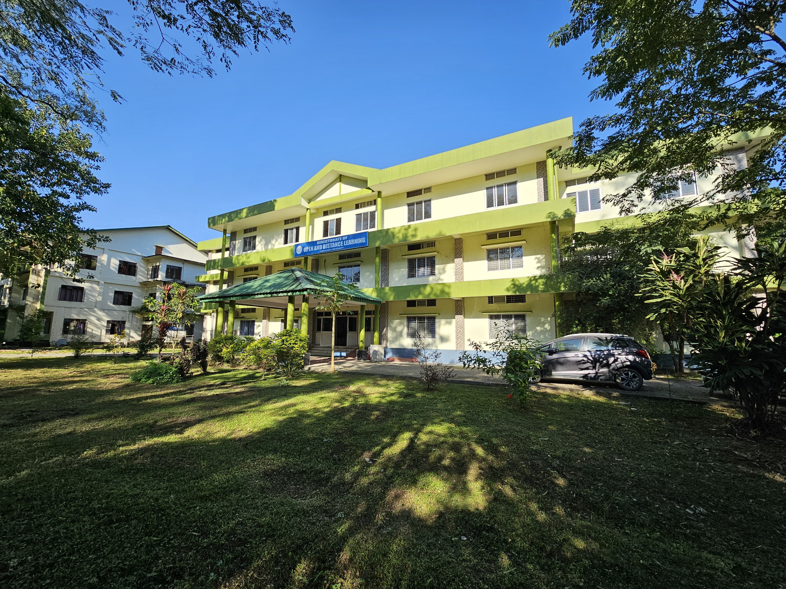
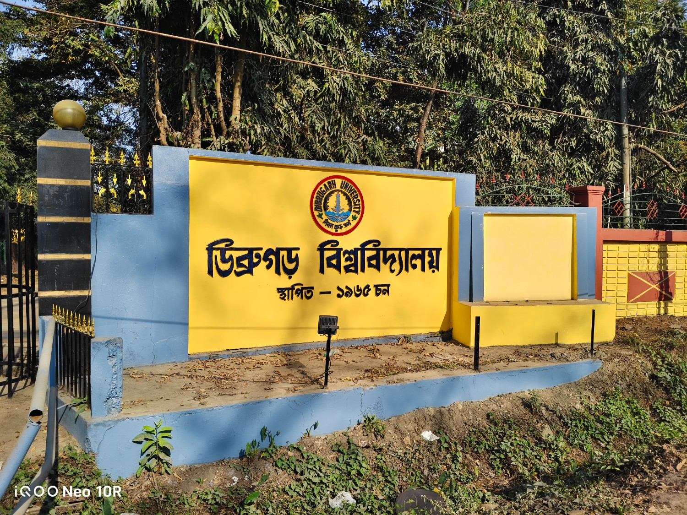

Centre for Distance and Open Education
Learn, prepare, and grow with a modern digital study portal built for BCA students. Access notes, previous questions, syllabus updates, faculty details, and academic resources in one place.


About Dibrugarh University
Dibrugarh University is a premier public university in Assam known for academic excellence, research culture, and a strong commitment to student development. It continues to inspire learners through quality education, innovation, and a vibrant campus community.
About the BCA Program
Bachelor of Computer Applications (BCA) is a 3-year undergraduate degree designed to develop strong skills in programming, database management, web development, networking, and software engineering.
- Duration: 3 Years (6 Semesters)
- Core Subjects: Programming, DBMS, Web Development, Networking
- Practical Learning: Projects, Lab Work, and Real-world Assignments
- Career Options: Software Developer, Web Developer, Data Analyst